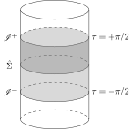
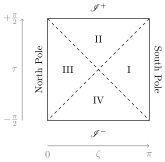
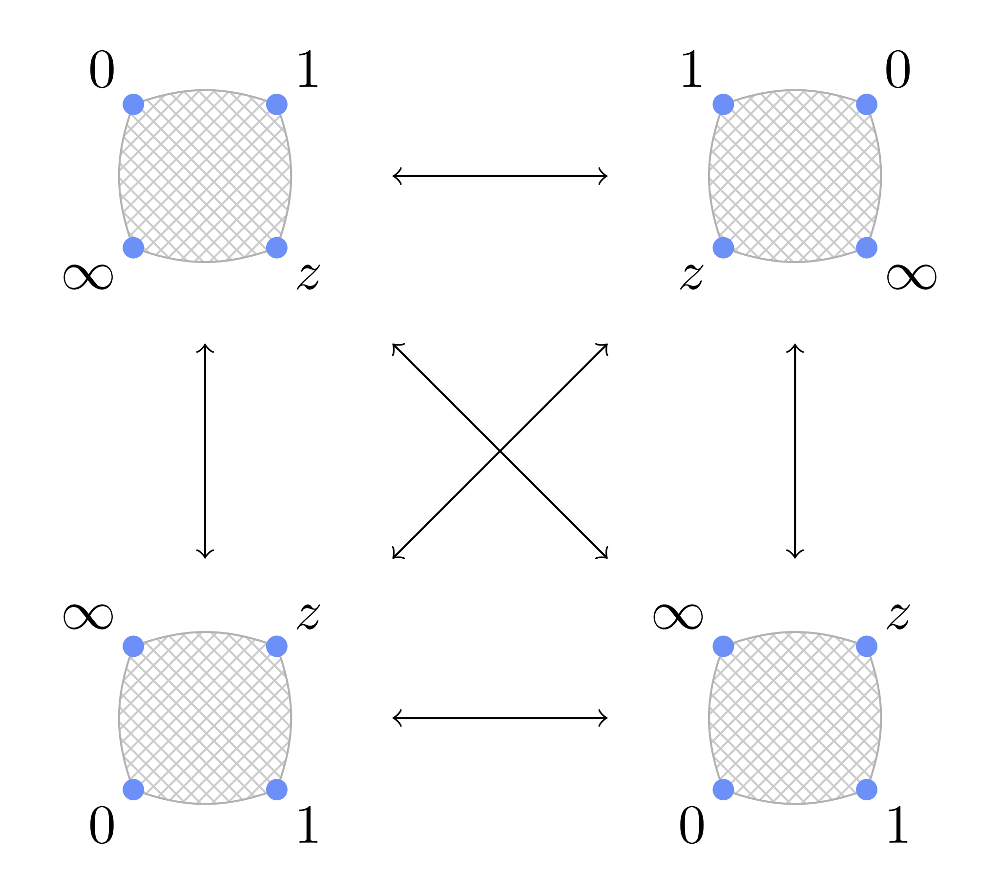
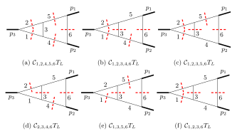
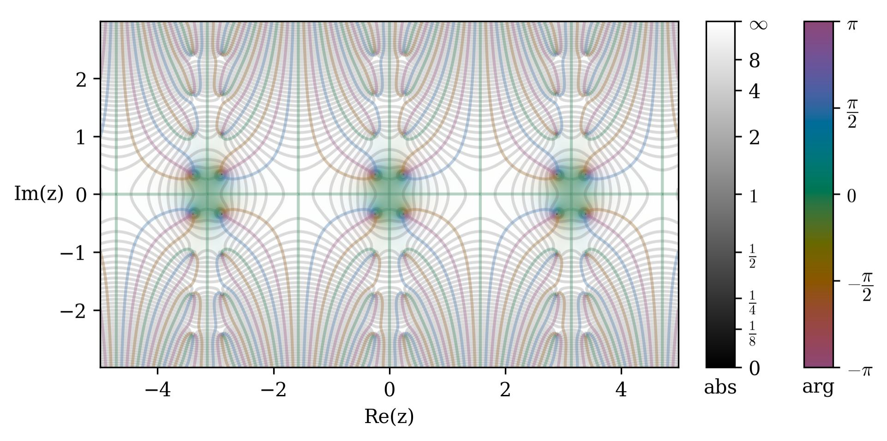
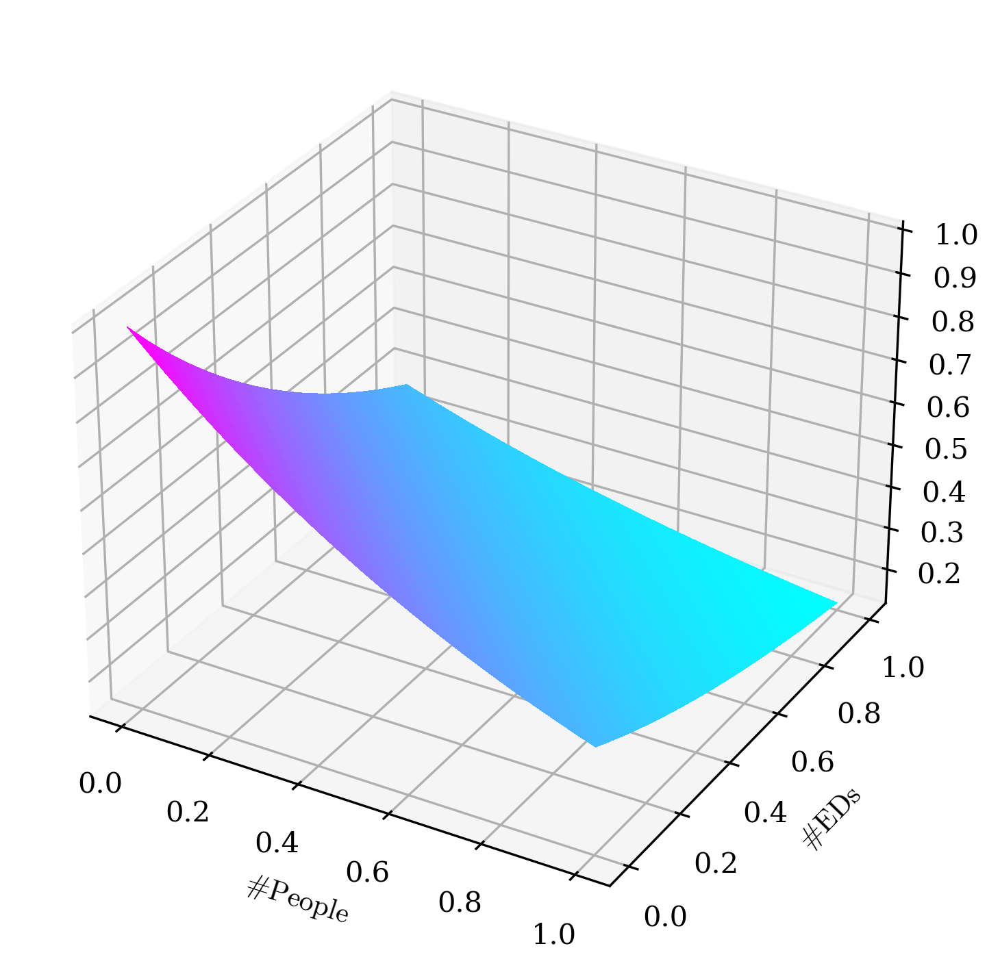
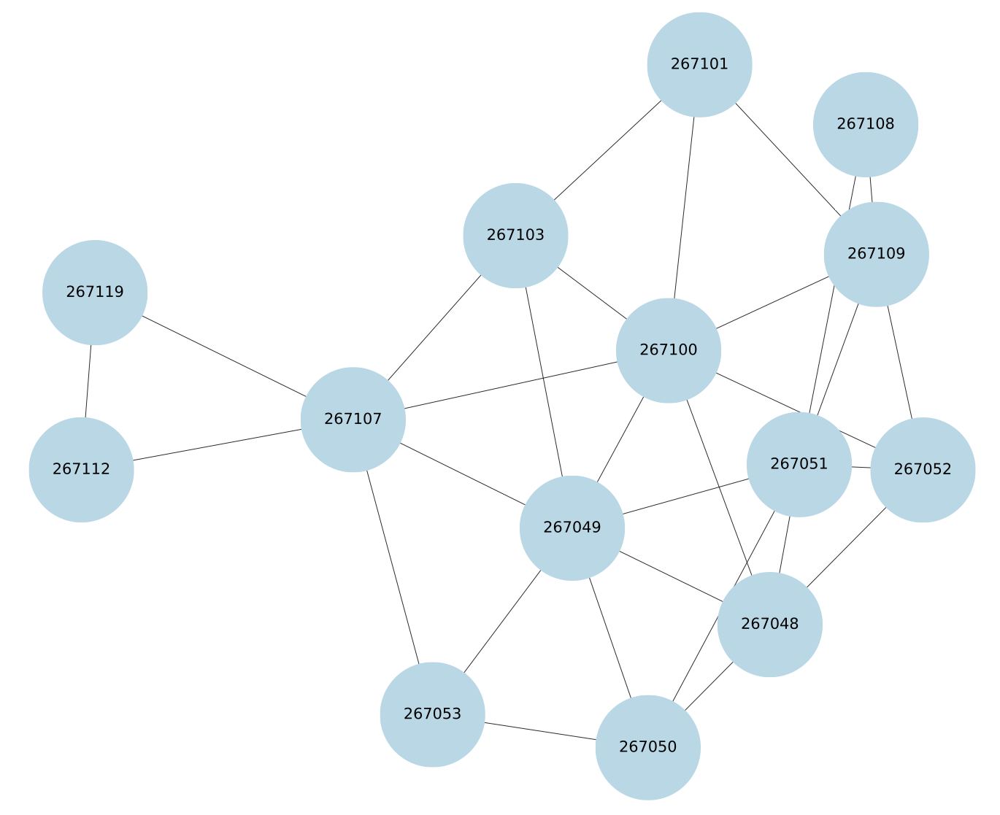
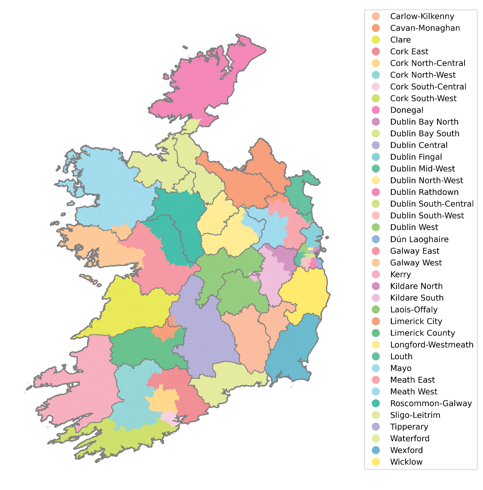
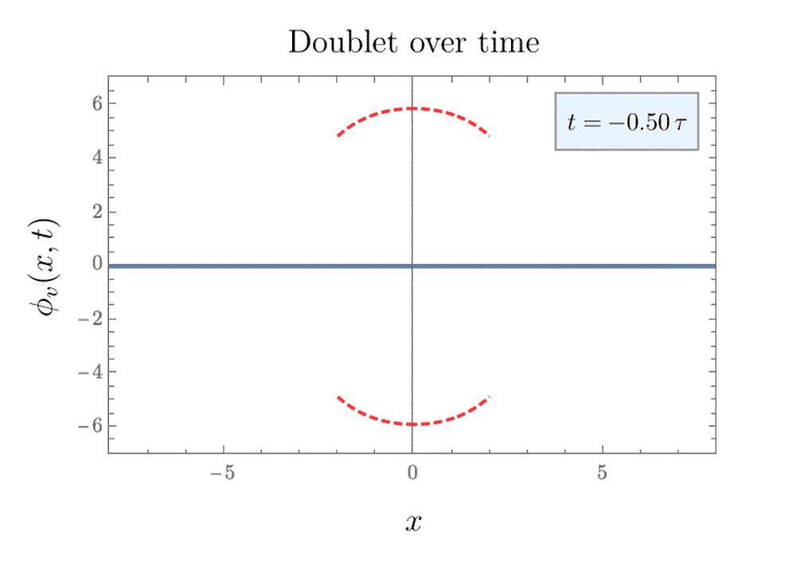
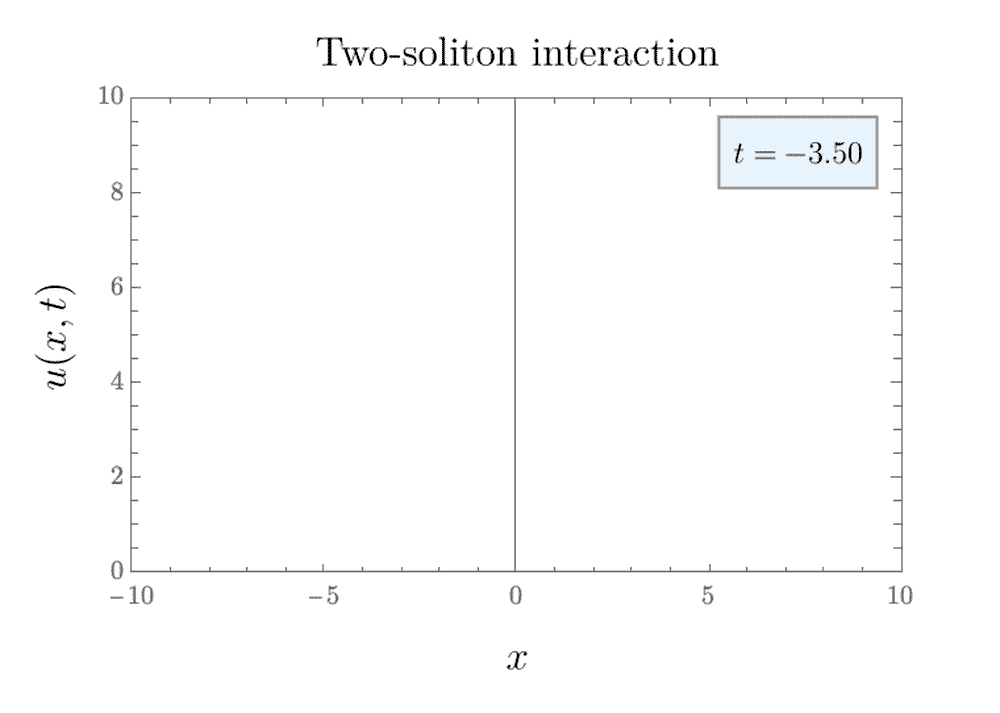

Curriculum Vitae
2024–2025: MASt in Mathematics, University of Cambridge (St John's College)
2020–2024: BA in Theoretical Physics, Trinity College Dublin
Projects
Asymptotic Decomposition of a Scalar Field in de Sitter Space
Jul–Aug 2024
Philippa Fawcett Internship | University of Cambridge
- In July and August 2024, I undertook a two-month research project in the Department of Pure Mathematics and Mathematical Statistics at the University of Cambridge, funded by the Philippa Fawcett Internship Programme.
- My group's project was supervised by Dr Grigalius Taujanskas, and involved investigating the asymptotic decomposition of a charged scalar field in de Sitter space.


The Symbol Alphabet of One-Loop Feynman Integrals
May–Jun 2024
Hamilton Trust Internship | Trinity College Dublin
- In May and June 2024, I participated in the Hamilton Trust Summer Mathematics Research Internship at Trinity College Dublin, in a group with Alexander Farren and Mikey Whelan.
- Our project was supervised by Prof. Ruth Britto, and involved a study of the symbol alphabet of one-loop Feynman integrals in quantum field theory.
Coalgebra for Feynman Integrals
Sep 2023–Apr 2024
Capstone Project | Trinity College Dublin
- During the 2023–2024 academic year, I completed my capstone project at Trinity College Dublin under the supervision of Prof. Ruth Britto.
- My project was on the coalgebra structure of Feynman integrals, with a particular focus on the diagrammatic coaction.


Black Hole Entropy in String Theory
Jun–Jul 2023
Summer Studentship | Dublin Institute for Advanced Studies
- In June and July 2023, I undertook a summer studentship in the School of Theoretical Physics at the Dublin Institute for Advanced Studies, which consisted of a group project in collaboration with three other students.
- My group's project was supervised by Dr Aradhita Chattopadhyaya, and was based on the computation of black hole entropy via microstate counting of systems of 1/4 BPS dyons in type IIB string theory.


Plotted using the Python package cplot.
Electoral Redistricting of Ireland
May 2023
Real-World Mathematical Modelling Event | Trinity College Dublin
- In May 2023, I participated in a three-day Mathematical Modelling Hackathon in Trinity College Dublin, in a group with Alexander Farren, Ben McGloin and Mikey Whelan.
- We developed an evolutionary algorithm in Python designed to optimise the constituency boundaries of Ireland according to the criteria outlined in the Irish Constitution.



Plotted using the Python packages matplotlib and GeoPandas.
Solitons in 1+1 Dimensions
Nov 2023
Independent Project
- A project in collaboration with Alexander Farren.
- We generated animations of soliton dynamics in Mathematica, and produced an accompanying report outlining the basic theory of solitons in one spatial dimension.

